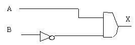
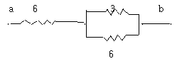

항로표지기사 (2006-08-06 기출문제)
1과목: 항로표지일반
1. 등탑의 기초 설계시 지반애에 기초를 얕게 매몰하여 측면 부착력, 저면반력에 의하여 안정을 유지하는 형식은?
- 부착식 기초
- 중력식 기초
- 반력식 기초
- 블록식 기초
(정답률: 알수없음)

2. 여수항으로 입항중인 선박이 항 입구에서 상부황색 하부흑색으로 도색된 등표를 발견하였다. 이 등표는 어느 방위표지인가?
- 남방위표지
- 북방위표지
- 동방위표지
- 서방위표지
(정답률: 알수없음)
3. 주어진 장소에 주어진 부표가 계류되어 있다고 가정하면 체인의 길이와 직경은 그 장소의 조류와 바람의 모든 상태에서 해저와 접선방향에 있어야 하며 계산된 강도에 대한 체인의 파단력의 비율은 조류와 바람이 가장 좋지 않은 상태에서 얼마이어야 하는가?
- 3이하
- 3 이상
- 5 이하
- 5 이상
(정답률: 알수없음)
4. 방위표지에 사용하는 등질로 맞는 것은?
- 북방위표지 : 연속적인 급섬광 또는 초급섬광
- 동방위표지 : 9회의 급섬광 또는 초급섬광 다음에 암간
- 서방위표지 : 6회의 급성광 또는 초급섬광 다음에 암간
- 남방위표지 : 3회의 급섬광 또는 초급섬광 다음에 장섬광 다음에 암간
(정답률: 93%)
5. 풍압차나 유압차가 있을 때 진자오선과 선수미선이 이루는 각은?
- 진침로
- 나침로
- 자침로
- 심침로
(정답률: 알수없음)
6. 정해진 등질이 반복되는 시간을 말하며 1섬광이 최초에 시작되는 시각으로부터 그 다음 섬광이 시작될 때까지의 시간을 무엇이라 하는가?
- 등질
- 점등시간
- 소등시간
- 주기
(정답률: 알수없음)
7. IALA 해상부표식에서 우리나라가 채택하고 있는 “B" 방식의 경우 우현표지 등부표의 번호와 등색이 올바른 것은?
- 짝수번호 - 홍색
- 짝수번호 - 녹색
- 홀수번호 - 홍색
- 홀수번호- 녹색
(정답률: 67%)
8. 해양수산부장관이외의자(사설항로표지)가 설치, 관리하는 자는 해양수산부령에 정한 허가신청서에 다음 서류를 첨부하여 관할지방해양수산청장에게 제출토록 되어있다. 이중 첨부서류가 아닌것은?
- 설치사유서
- 항로표지설치양식
- 항로표지의 설치위치도
- 항로표지현황조서
(정답률: 알수없음)
9. 항로표지 설계시 파압력 계산에 적용되는 정수면은?
- 최고고조면
- 평균수면
- 기본수준면
- 평균고조면
(정답률: 알수없음)
10. IALA 행상부표식에서 두표의 사용은 항해자가 표지를 시인하고 그 의미를 확신하는 것을 돕기 위하여 설치된다. 다음 중 규정에 맞지 않는 것은?
- 원추형두표 2개
- 원추형두표 1개
- 원통형두표 1개
- x형두표 2개
(정답률: 84%)
11. 주변 수역이 가항수역임을 표시하는 표지로 홍색구형 두표가 부착된 것은?
- 방위표지
- 우현표지
- 안전수역표지
- 고립장해표지
(정답률: 알수없음)
12. IALA 해상 부표식(B지역) 고립장해표지 두표의 도색은?
- 백색
- 흑색
- 홍색
- 황색
(정답률: 알수없음)
13. 현행 항로표지법시행령에서 규정하고 있는 사설항로표지의 관리자 자격기준 연령으로 맞는 것은?
- 57세 이하
- 60세 이하
- 65세 이하
- 70세 이하
(정답률: 알수없음)
14. 항로표지법시행규칙의 규정에 의하여 검사대행기관이 그 업무를 휴지하고자 하는 경우 휴지기간은 몇 월을 초과할수 없나?
- 1월
- 3월
- 6월
- 12월
(정답률: 70%)
15. 관측자가 물표의 방위를 관측하여 물표와 관측자를 연결한 방위선을 이용하여 위치선으로 이용하는 방법으로 선박에서 가장 많이 사용하는 위치선 방법은 무엇인가?
- 중시선에 의한 위치선
- 수평거리에 의한 위치선
- 수형형각에 의한 위치선
- 방위선에 의한 위치선
(정답률: 알수없음)
16. 항로표지의 설치 및 관리 업무를 관장하는 자는?
- 해양수산부 장관
- 해난심판원장
- 해양경찰청장
- 국무총리
(정답률: 100%)
17. 가장 최근에 구한 정확한 선위를 기초로 자선의 침로와 항정에 의하여 현재의 선위를 추측하는 항법을 무엇이라 하는가?
- 연안항법
- 추측항법
- 인공위성항법
- 천문항법
(정답률: 알수없음)
18. 선박이 항구에 입항할 때 외해로부터 우선적으로 이용되는 수로는?
- 출입 또는 접근수로
- 항내 및 하천수로
- 종전수로
- 안전수로
(정답률: 알수없음)
19. 항로표지의 등질 중 빛을 비추는 시간이 꺼져있는 시간보다 짧은 것으로 일정한 간격으로 섬광을 발사하는 등을 무엇이라고 하는가?
- 호광등
- 섬광등
- 명암등
- 군섬광등
(정답률: 알수없음)
20. 통항이 곤란한 좁은 수로, 만구 등에서 선박에 안전한 진로를 주기 위해서 진로의 연장선상의 육지에 설치된 높이의 차가 있는 항로표지는?
- 도등
- 지향등
- 조사등
- 교량등
(정답률: 알수없음)
2과목: 전기·전자기초
21. 직류기의 주요 구성 요소가 아닌 것은?
- 공극
- 계자
- 정류자
- 전기자
(정답률: 알수없음)
22. 정논리인 74시리즈 IC를 사용한 다음 그림에서 A에 5V, B에 0[V]를 가했을 때 출력 X의 전압은 몇 V인가?

- 0
- 1
- 5
- -5
(정답률: 알수없음)
23. 다음 중 전류가 통하고 있는 도체를 자기장 중에 놓았을 때 기계적인 힘이 발생하는 원리를 응용한 것은?
- 스피커
- 발전기
- 발화기
- 마이크로폰
(정답률: 100%)
24. 타양광 발전 시스템에 대한 가장 올바를 설명은?
- 한 곳에 모은 태양광의 에너지로 열기관을 이용하여, 그 열을 전력으로 변환하는 장치이다.
- 태양 전지를 이용하므로 빛이 없을 때에는 발전이 불가능하기 때문에 축전장치(축전지)가 필요하다.
- 출력은 직류이므로, 교류로 발전한 것을 직류로 변환하기 위해 별도의 정류장치가 반드시 필요하다.
- 구름이 낀 날이나 비가 오는 날은 발전이 전혀 불가능 하므로 저온에서는 전기를 만들어 낼 수 없다.
(정답률: 알수없음)
25. 선간전압 100V 역률 60%인 평형 3상 부하에서 소비전력이 10kw일때 선전류는 약 몇 A 인가?
- 66.2
- 86.2
- 96.2
- 99.3
(정답률: 알수없음)
26. 패러데이의 법칙에 대한 설명으로 가장 적합한 것은?
- 전자 유도에 의해 회로에 발생하는 기전력은 자속 쇄교수의 전류에 대한 증가율에 비례한다.
- 전자 유도에 의해 회로에 발생하는 기자력은 자속의 변화를 방해하는 반대 방향으로 기전력이 유도된다.
- 정전 유도에 의해 회로에 발생하는 기자력은 자속의 변화 방향으로 유도된다.
- 전자 유도에 의해 회로에 발생하는 기전력은 자속 쇄교수의 시간에 대한 변화율에 비례한다.
(정답률: 알수없음)
27. 정류회로에서 리플전압(riffle voltage)이란?
- 정류된 전압의 직류분
- 정류된 전압의 교류분
- 무부하 전압
- 전부하 전압
(정답률: 알수없음)
28. 전기자의 주된 역할은 무엇인가?
- 회전체와 외부 회로 접속
- 기전력 유도
- 자속 유기
- 정류 작용
(정답률: 알수없음)
29. 1KW 전열기를 200V로 사용할 때 전류는 몇 A 인가? (단, 역률은 1 이라고한다.)
- 10
- 5
- 1
- 50
(정답률: 알수없음)
30. 전류가 흐르려고 하면 코일은 전류의 흐름을 방해한다. EH, 전류가 감소하면 이를 계속 유지하려고 하는 성질이 있다. 이것을 무슨 법칙이라 하는가?
- 앙페에르의 오른손법칙
- 플레밍의 왼손법칙
- 비오사바르의 법칙
- 렌츠의 법칙
(정답률: 알수없음)
31. 계자 철심에 잔류 자기가 없어도 발전되는 직류기는?
- 직권기
- 복권기
- 분권기
- 타여자기
(정답률: 28%)
32. 다음중 정전계의 설명으로 가장 적합한 것은?
- 전계dpsjwlrk 최대로 되는 전하 분포의 전계이다.
- 전계 에너지와 무관한 전하 분포의 전계이다.
- 전계 에너지가 최소로 되는 전하 분포의 전계이다.
- 전계 에너지가 일정하게 유지되는 전하 분포의 전계이다.
(정답률: 알수없음)
33. 6Ω 의 저항 2개와 3Ω의 저항을 그림과 같이 직,병렬 회로로 연결하였을 때 a, b 간의 합성저항은 몇 Ω 인가?

- 3
- 6
- 8
- 9
(정답률: 80%)
34. IC를 사용한 정전압 창치에서 IC 7812가 뜻하는 전압은?
- + 9[V]
- -9 [V]
- +12 [V]
- -12 [V]
(정답률: 알수없음)
35. 분권 발전기를 정지시킨 후 계자 조정기의 위치는 저항값을 어떻게 하여야 하는가?
- 0으로 놓는다.
- 중위로 한다.
- 최대로 하낟.
- 최소로 한다.
(정답률: 알수없음)
36. 축전지의 용량을 나타내는 단위는?
- Wh
- kW
- V
- Ah
(정답률: 알수없음)
37. 놀리식 Aㆍ(A+B)를 간단히 하면 다음 중 어는 것인가?
- A
- B
- AㆍB
- A+B
(정답률: 90%)
38. 축전지의 용량에 대한 설명으로 옳은 것은?
- 축전지가 최고로 낼 수 있는 시간당 전류를 말한다.
- 충전완료로부터 방전종료시까지의 맨 처음 시간의 전류를 말한다.
- 충전완료로부터 방전종료시까지의 사용전류와 시간을 곱한 것을 말한다.
- 기전려고가 전류의 곱을 말한다.
(정답률: 100%)
39. 연축전지가 방전하면 양극판은 어떠한 색깔로 변하는가?
- 적갈색
- 회백색
- 녹색
- 황색
(정답률: 알수없음)
40. 태양전지는 무엇을 이용한 발전 방식인가?
- 태양에너지의 광합성
- 축열한 태양에너지에 의한 열기관
- 접합한 P형과 N형의 실리콘 반도체층의 광기전력
- 태양 빛을 받은 발광 다이오드 및 IC회로
(정답률: 알수없음)
3과목: 광파·음파표지
41. 등표의 기본 요건으로 적합하지 않은 것은?
- 야표로서 해상 및 기상조건과 선박교통량을 과려하고 안전한 거리를 감안하여 충분한 광달거리를 가져야 한다.
- 항로표지로서 항만수역의 적절한 위치를 표시하고 항상 정확히 운용되어야 한다.
- 주표로서 역할을 하기 위하여 직경은 1.5~3 m 이상이어야 한다.
- 등표는 해상에 설계되는 것으로 위치선택이 자유롭기 때문에 기상 및 해상상태의 영향을 최소화 할 수 있다.
(정답률: 67%)
42. 지향등(direction light)이 설치되는 곳으로 틀린 것은?
- 선박의 특별한 방향을 알려줄 필요하 있는곳
- 조사등을 설치할 수 있는 곳
- 선박의 진로를 알려 줄 필요가 있는 곳
- 통항이 곤란한 협수로 등에 가장 안전한 진로를 표시하기 위한 진로 연장선상의 육지
(정답률: 알수없음)
43. 등부표 정치방법과 거리가 먼 것은?
- 일반적으로 체인의 길이는 수심, 조차, 파랑을 고려하여 수심의 2~2.5배로 한다.
- 조류가 없는 곳에서는 침추없이 체인의 길이를 수심과 같게 정치한다.
- 조류가 빠른 곳에 정치할 때는 침추 2개 이상을 직렬로 연결하여 정치한다.
- 체인길이는 파랑의 영향이 없는 항만내에서는 수심의 1.2~1.5배로 할 수 있다.
(정답률: 알수없음)
44. 국제조명위원회가 정한 표색계의 기호가 아닌 것은?
- K
- X
- Y
- Z
(정답률: 100%)
45. 다음 중 광파표지의 기본요건으로 적합하지 않은 것은?
- 섬광과 암간이 동일 간격으로 유지하되 반복할 필요는 없다.
- 항해자가 다른 등화와 식별할 수 있도록 등광에 개성을 주어서 관측자가 명확하게 구분할 수 있도록 하여야 한다.
- 등명기 및 광원은 가능한 한 효율성과 신뢰성이 놓아야 한다.
- 지리학적인 측면에서 항로표지의 용도 및 목적을 만족 시킬 수 있고, 충분한 안정성을 가져야 한다.
(정답률: 알수없음)
46. 항로표지의 야간표지 중에서 “등대 부근에 위험물이 있고 풍랑이나 조류 때문에 등부표를 설치하기 어려운 경우, 그 등대에 강력한 투광기를 설치하여 위험 구역만 비추기 위한 등화”는 무엇인가?
- 등선(Light ship)
- 도등(Leading light)
- 부등(Auxiliary light)
- 임시등(Occasional light)
(정답률: 알수없음)
47. 등표와 등부표의 정비점검 주기로 옳은 것은?
- 1개월에 1회 이상
- 2개월에 1회 이상
- 3개월에 1회 이상
- 4개월에 1회 이상
(정답률: 100%)
48. 부표에 작용하는 수직력과 체인의 중량과의 관계를 바르게 설명한 것은?
- 부표에 작용하는 수직력은 체인의 전 중량과 같다.
- 부표에 작용하는 수직력은 체인의 전 중량보다 작다.
- 부표에 작용하는 수직력은 체인의 전 중량과는 무관하다.
- 부표에 작용하는 수직력은 체이느이 전 중량보다 크다.
(정답률: 알수없음)
49. 어떤 소리가 또 다른 소리를 들을 수 있는 능력을 감소시키는 현상을 무엇이라고 하는가?
- 파스칼의 원리
- 도플러 효과
- 호이겐스 효과
- 매스킹 효과
(정답률: 알수없음)
50. 다음 고립장애표지의 설명중 틀린 것은?
- 형상은 원조나 망대형이다.
- 두표는 흑구 2개이다.
- 도색은 흑색바탕에 하나의 넓은 홍색횡대이다.
- 등색은 황색이다.
(정답률: 알수없음)
51. 다음 등명기에 관한 설명 중 틀린 것은?
- 일광제어기는 야간에 등명기에 전원을 공급하는 제어장치이다.
- 섬광기는 전구의 교류전압과 전류를 제어한다.
- 상부등체는 렌즈, 색필터, 렌즈보호대, 조류방지봅(Bird spike)등으로 구성된다.
- 하부등체는 케이스, 섬광기, 일광제어기, 회전장치 등으로 구성된다.
(정답률: 알수없음)
52. 다음 중 광파표지의 종류에 속하지 않는 것은?
- 등표
- 등대
- 도등
- 도표
(정답률: 알수없음)
53. IALA B지역에 적용되는 표지의 두표(붙일 경우)를 바르게 짝지어 놓은 것은?
- 좌현표지 - 홍색원통형 1개
- 좌현측 우선항로 - 정점상향 녹색원추형 1개
- 우현표지 - 녹색원추형 1개
- 우현측 우선항로 - 녹색 원통형 1개
(정답률: 알수없음)
54. 다음 중 안전수역표지로 이용되는 등질은?
- 단섬광
- 군섬광
- 급섬광
- 모르스광
(정답률: 알수없음)
55. 다음 중 눈부심(Glare)을 생기게 하는 원인이 아닌 것은?
- 광원의 위치와 관측자의 시선 방향이 가깝다.
- 눈이 낮은 휘도수준에 순응하고 있다.
- 광원과 그 주위의 휘도의 차가 대단히 크다.
- 눈에 들어오는 광원의 시각이 작다.
(정답률: 알수없음)
56. 다음 중 압ㅇ축된 공기로써 소리를 내어 위치를 표시하는 음향표지는?
- 다이야후램폰
- 전기폰
- 에어사이렌
- 모터사이렌
(정답률: 알수없음)
57. 빛이 보이지 않는 상태로부터 마침 보이는 세기로 되는 겨계의 곳을 “역”이라고 한다. 그 때의 값을 무엇이라고 하는가?
- 부동광도
- 투과율
- 역치
- 글레어
(정답률: 알수없음)
58. 국제항로표지협회(IALA)에서 권고하는 실효ㅗ강도 계산방식이 아닌 것은?
- 섬광이 매분 300회 이하의 비율로 발광시 슈미트ㆍ크라우젠 방식을 사용한다.
- 섬광의 등질이 시간차가 있는 섬광인 경우 최저값을 취한다.
- 볼 수 있는 방향이 차이가 있는 섬광일 경우 최고값을 취한다.
- 융합빈도 이상의 비율로 반복하는 섬광으로 볼 때 연속으로 보이는 등화의 경우는 돌보트 법칙을 적용한다.
(정답률: 50%)
59. 다음 중 항로표지 등화의 등색으로 사용되지 않는 것은?
- 백색
- 황색
- 적색
- 청색
(정답률: 알수없음)
60. 파동의 전파속도 v, 파장 λ, 진동수 n 이라 할때, 관계식으로 옳은 것은?
- v = λ/n
- v = nλ
- v = n/λ
- v = 1/2 nλ
(정답률: 90%)
4과목: 전파표지 및 시스템이용
61. 다음 중 전파가 통과하는 지표면의 도전율이 가장 높은 것은?
- 비옥한 농업지대
- 산악지대
- 해수
- 시가지
(정답률: 91%)
62. 로란-C의 발사 전파가 주로 반사되는 전리층으로 맞는 것은?
- D층, E층
- E층, F층
- F1층, F2 층
- F층, G층
(정답률: 알수없음)
63. 다음 중 레이더 리플렉터의 설명으로 틀린 것은?
- 원거리에 있는 물표탐지의 개선
- 해면반사 EH는 비에 의한 소란해역에 있는 물표탐지 개선
- 표지와의 충돌로 인한 재해 방지
- 강조된 물표 신호를 제공하는 능동적 장치
(정답률: 알수없음)
64. 다음중 전파에 대한 설명으로 맞는 것은?
- 진공에서의 전파의 속도는 음속과 같다.
- 전파가 파원에서 멀어짐에 따라 그 파장의 길이가 점차 감소한다.
- 전파는 진행중에도 진폭이 일정히 유지된다.
- 전파는 성질이 다른 매질의 경계면에서 반사와 굴절현상이 일어난다.
(정답률: 알수없음)
65. 선박용 RADAR설비는 지시장치를 이용하여 주로 무엇을측정하는가?
- 방위와 높이
- 거리와 면적
- 거리와 방위
- 방위와 풍속
(정답률: 64%)
66. 다음은 현재 운용중인 DGPS 시스템에 사용되는 RTCM 메시지 Type No (형식번호) 이다. 이 중 의사거리 보정치의 정보를 제공하는 형식번호는 몇 번 인가?
- Type 3
- Type 5
- Type 7
- Type 9
(정답률: 알수없음)
67. 다음 전파잡음 중 자연잡음이 아닌 것은?
- 우주잡음
- 태양잡음
- 은하납음
- 도시잡음
(정답률: 100%)
68. GPS에서 사용하는 위성의 고도는 약 몇 km 인가?
- 5000km
- 10000km
- 20000km
- 50000km
(정답률: 알수없음)
69. 특수신호 시스템 중 초음파식 도플러 다층유속계로도 불리우며 수괴의 수직면 Profile을 얻을 수 있는 방식은?
- GEK(Geomagnetic Electro-Kinematograph)
- 전자유속계(Electromagnetic Current meter)
- ADCP(Acoustic Doppler Current Profiler)
- EM Log(Electromagnetic Log)
(정답률: 알수없음)
70. 다음 중 태양광 발전만으로 전기를 공급하는 방식으로서 송전설비가 비경제적이거나 불가능한 원격지의 전원에 주로 사용되는 시스템은?
- 독립형
- 계통연계형
- 하이브리드(Hybrid)형
- 중앙공급형
(정답률: 알수없음)
71. 중파무선표지(라디오비콘)에 사용되는 주파수로 가장 적당한 것은?
- 2⑤~273 kHz
- 283~325kHz
- 325~368kHz
- 375~425kHz
(정답률: 알수없음)
72. 쌍곡선 항법과 거리가 먼 것은?
- 로란
- 데카
- 레이더비콘
- 오메가
(정답률: 알수없음)
73. 다음 중 전파의 잡음방해에 대한 개선책이 아닌 것은?
- 잡음원에 대하여 필터를 삽입하거나 차폐시킨다.
- 송신전력을 크게 한다.
- 수신기으 실효대폭을 가능한 넓게 한다.
- 안테나의 지향성을 예민하게 하여 이득을 높인다.
(정답률: 알수없음)
74. 국제전기통신조약에 의한 주파수 구분이 틀린 것은?
- LF : 30kHz ~300 kHz
- MF : 300kHz~ 3,000kHz
- HF : 3 MHz ~30 MHz
- UHF : 30MHz~300MHz
(정답률: 85%)
75. 로란-C 시스템에서 브링크(Blink) 사유가 아닌 것은?
- 수신된 TD 값이 허용치를 초과할 때
- ECD 값이 허용치를 초과 할 때
- 위상코드 EH는 GRI가 부적절 할 때
- 종국이 정규출력전력의 10% 이하로 운용 될 때
(정답률: 46%)
76. 위성항법 보정장치(DGPS)의 송신장치에서 사용되는 변조방식으로 맞는 것은?
- MSK 변조
- 펄스 변조
- 반송파 변조
- 2상 PSK변조
(정답률: 알수없음)
77. GPS의 오차 요인과 관계가 적은 것은?
- 대기권(전리층, 대류권 등)에서의 전파지연 오차
- 위성 상호간의 간섭에 의한 오차
- 위성자체 및 GPS 수신기 시계의 오차
- 위성궤도정보의 오차
(정답률: 알수없음)
78. GPS의 두개의 반송파인 L1 신호와 L2 신호의 주파수의 비는 대략 얼마인가?
- 154 : 120
- 120 : 154
- 100 : 200
- 200 : 100
(정답률: 알수없음)
79. Loran-C 펄스군의 반복주기를 무엇이라 하는가?
- GRI
- PRI
- PLL
- PRR
(정답률: 알수없음)
80. 송신기에서 1 W 의 전력으로 송출된 신호가 이득이 25dB 인 안테나를 통해 복사하여 경로손실이 - 100 dB인 경로를 거쳐 이득이 25dB 인 안테나에 수신 되었을때 수신된 신호의 전력은 얼마인가?
- 0.001 mW
- 0.01 mW
- 0.1 mW
- 1mW
(정답률: 알수없음)